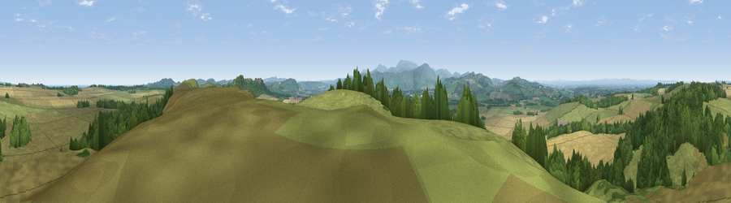

Viewpoint near Ford
#2660 in England · top 17% of its area beats it · near FordWhere it is
The exact computed spot (NT 96575 37175). Click the marker for map links.
The view, rendered

A 360° render of this exact spot computed from the terrain model, tree cover and land cover — summer colours, afternoon light, calibrated against photographs of famous viewpoints. Real trees, hedges and buildings will differ in detail.
The panorama
Grey silhouette: terrain skyline in each direction (720 bearings, Earth curvature and refraction included). Dashed green: skyline with trees (+15 m) and buildings (+8 m) as obstacles. Blue strip: how far the ground is visible on each bearing.
Where the view opens
Wedge length = distance to the farthest visible ground on that bearing (vegetation-aware). Rings at 10, 25 and 50 km.
What fills the view
55% grassland · 24% cropland · 20% woodland
Angular shares of the visible panorama (visual magnitude), not map area. Landscape diversity 0.45 (0–1 Shannon).
Key numbers
More beautiful places nearby
The staircase of upgrades: each row has a higher view potential than everything closer. Driving times are estimates from straight-line distance, calibrated against real road routing — check an actual route before setting out.
| Place | Direction | Drive | Score |
|---|---|---|---|
| Viewpoint near Doddington | ESE · 3 km | ~6 min | 80.3 |
| Housedon Hill | SW · 8 km | ~16 min | 80.5 |
| Viewpoint near Fenwick | E · 8 km | ~16 min | 80.7 |
| Viewpoint near Kirknewton | SSW · 9 km | ~17 min | 86.1 |
| Greensheen Hill | E · 9 km | ~18 min | 87.5 |
| Viewpoint near Chillingham | SE · 16 km | ~29 min | 88.1 |
| Ullock Pike | SSW · 130 km | ~154 min | 89.4 |
| Long Side | SSW · 130 km | ~154 min | 89.5 |
55.62814, -2.05595 · source: screening · position refined by local search. Computed location — check access rights before visiting.